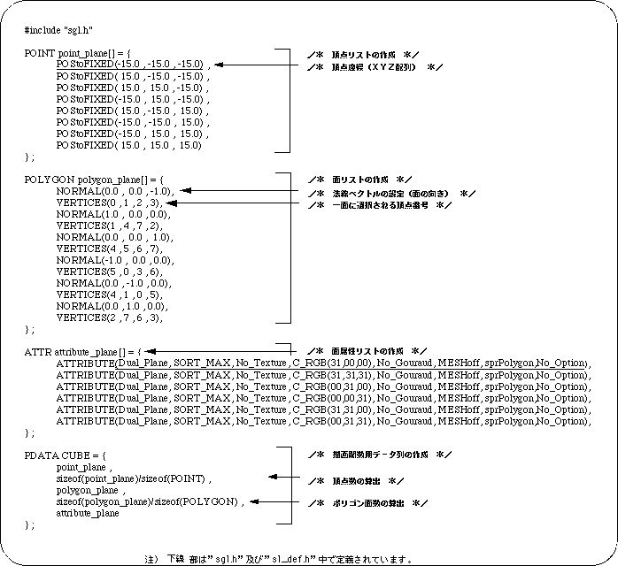
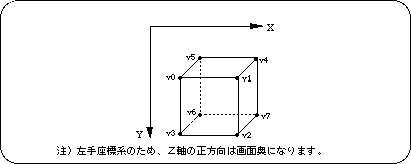

Return to previous page | Return to menu | Go to next page
When you actually represent some shape using polygons, it is impossible to achieve it with just one polygon. Therefore, here we will explain how to create Object data using multiple polygon faces.
To represent a cube, an object with 8 vertices and 6 polygon faces must be set as a parameter value.
In SGL, this can be realized by rewriting the contents of the parameter setting data file “polygon.c” as follows.
In the list, first create a list of 8 vertices that are the basis of the cube, then create a list of 6 faces from these vertices, determine the surface attributes for each face, and then send each data to the parameter data string “PD_PLANE” Store in By passing this as a polygon parameter to the drawing function “slPutPolygon”, the cube is drawn on the screen.
Listing 2-3 below shows an example of creating cube polygon data.

